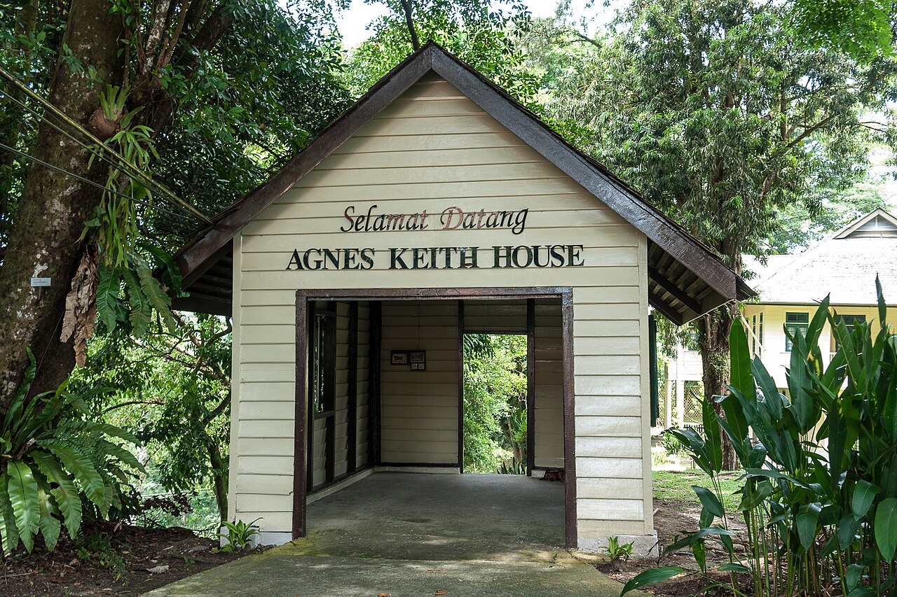
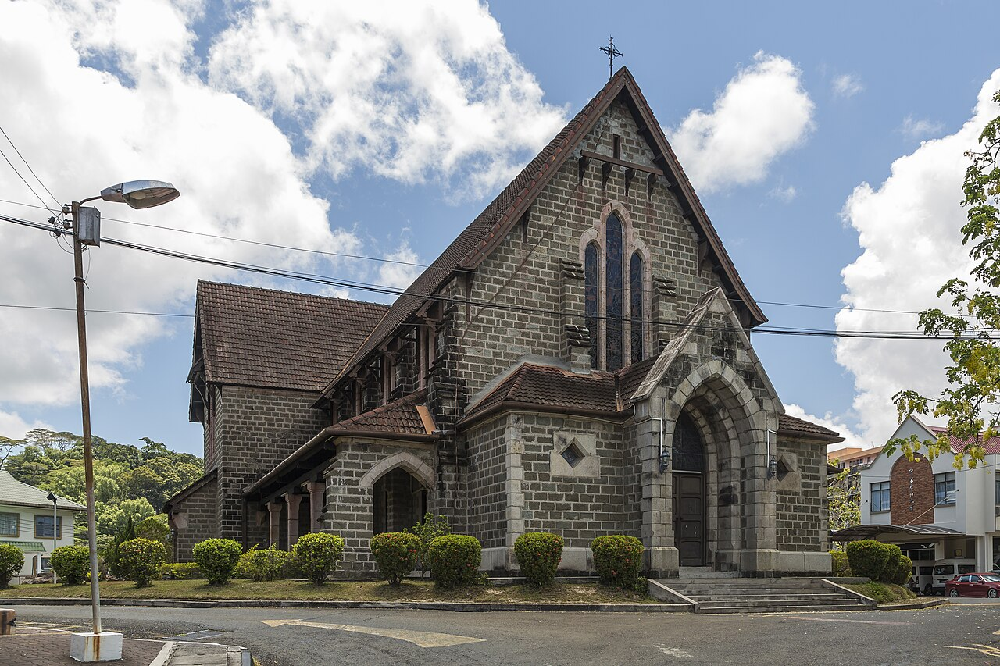
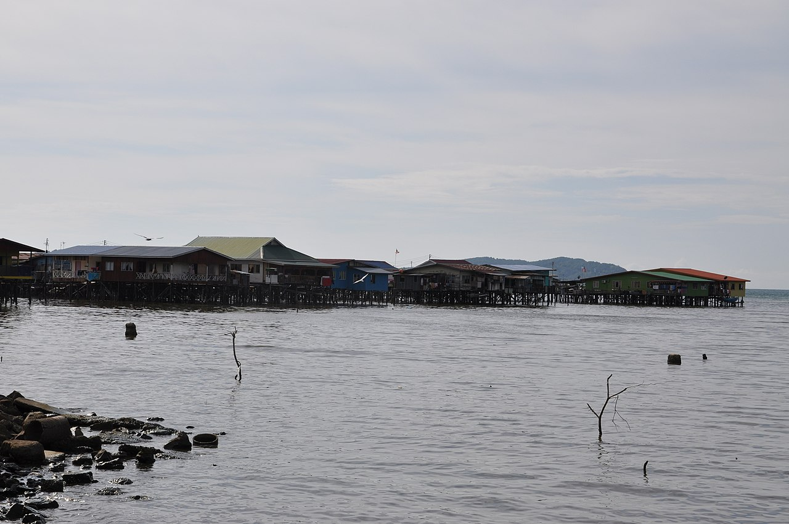

1Arrival
BKI → SDK · town heritage & sunset
● Land, then walk a colonial harbour
Take the 45-minute flight BKI→Sandakan, not the 6-hour mountain bus [13], then transfer toward Sepilok or into town [14]. Walk the Sandakan Heritage Trail — the 100 Steps, St Michael's, and Agnes Keith House with its "Land Below the Wind" story [11].



Time colonial high tea or sunset at the English Tea House [17], or take the harbour view from the hilltop Puu Jih Shih Temple [20]. Dinner: charcoal seafood out in the Sim Sim stilt village [19], with the accidental UFO tart for dessert [18].
FLIGHT 45 min vs 6 h busTRANSFER 25 km to SepilokBASE town or jungle